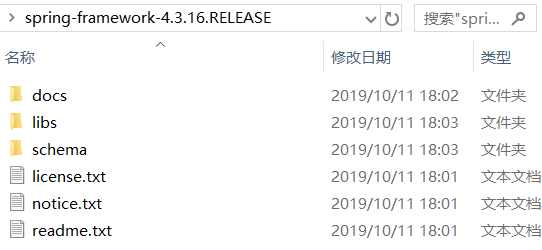
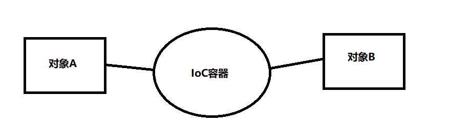
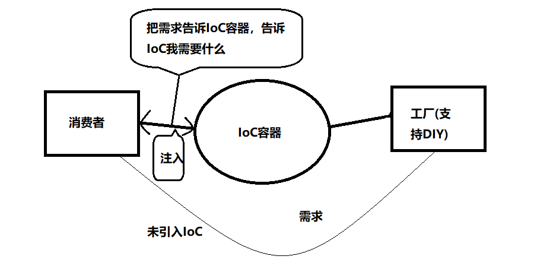

原文连接:https://www.cnblogs.com/bysoke/p/11725761.html
Spring笔记（一）
什么是Spring？
Spring是一个以IoC(Inversion of Control-控制反转)和AOP(Aspect Oriented Programming-面向切面编程)为内核的开源框架。
那么什么是框架呢？框架能做什么？为什么要使用框架？框架其实就是能完成一定功能的半成品。框架能够帮助我们完成的是：项目的整体框架、一些基础功能、规定了类和对象如何创建，如何协作等，当我们开发一个项目时，框架帮助我们完成了一部分功能，我们自己再完成一部分，那这个项目就完成了。
Spring框架包结构
使用Spring框架进行开发时，需要用到Spring框架和第三方依赖包。
框架包：
以Spring 4.3.16为例。下载之后，解压，最终的目录结构图如下：

其中，libs目录下包含60个jar文件，这些jar文件分为3类：
a、以RELEASE.jar结尾的是Spring框架class文件的压缩包
b、以RELEASE-javadoc.jar结尾的是Spring框架的API文档的压缩包
c、以RELEASE-sources.jar结尾的是Spring框架源文件的压缩包
整个Spring由20个模块组成，该目录下为每个模块都提供了这三种压缩包。初次之外，在libs目录中，还有4个Spring的基础包，分别对应Spring核心容器的4个模块：
spring-core-4.3.16.RELEASE.jar：包含Spring框架的基本核心工具类，Spring其他组件都要用到这个包里面的类。
spring-beans-4.3.16.RELEASE.jar：所有基于Spring框架的应用都要用到的jar包，包含访问配置文件、创建和管理Bean以及进行IoC或者DI操作相关的所有类。
spring-context-4.3.16.RELEASE.jar：Spring提供了在基础IoC功能上的扩展服务，还提供了许多企业级服务的支持，如任务调度、JNDI定位、EJB集成、远程访问、缓存、邮件服务以及各种视图层框架的封装等。
spring-expression-4.3.16.RELEASE.jar：定义了Spring的表达式语言。
第三方依赖包：
在使用Spring进行开发时，Spring的核心容器还需要依赖commons-logging的jar包。
什么是控制反转-IoC？
学习IoC之前，要先懂什么是依赖？
应用程序在没有引入IoC容器之前，对象A依赖对象B，那么A对象实例化或者运行到某一个点的时候，自己就必须去主动创建对象B或者使用已经创建好的对象B，如果没有对象B，对象A就无法使用，就是A has B的关系。此时，我们就可以理解为对象A对B对象产生了依赖。
从上面的依赖关系可以看出，创建对象的过程是主动的：缺对象B马上new一个，也就是说我需要啥自己去创建一个；而将对象引入Ioc容器之后呢？对象A和对象B就失去了直接联系，当A对象实例化或者运行到某个点需要对象B，IoC容器就是主动创建一个对象B给到A需要的地方。此时，对象A获取对象B的过程就是被动获取的，也就是把原来由自己创建对象的权力交给了IoC容器，此时对象的创建都由IoC容器来管理，这就是控制反转。你也可以这么理解：是的，你想抽烟！没结婚之前，想抽什么买什么，因为钱在自己手里。结婚之后呢？工资到哪里去了呢？很明显要上交给老婆大人，那你此时想抽烟就比较麻烦了，你该怎么做呢？是不是应该请求老婆大人给钱买烟呢？只有老婆大人给了你钱，你才能买到烟...这个权力的颠倒过程就是控制反转的过程。
IoC在角色扮演上等价于一个第三方，我更习惯于理解成为一个代理商。为什么这么说呢？因为IoC实现了对具有依赖关系的对象之间的解耦！来，看图：

从上面的图中可以看出，IoC做了什么事情呢？IoC它把各个对象类封装之后，再通过IoC容器来关联这些对象。这样一来，对象与对象之间的关系就通过IoC容器来进行联系，而对象与对象之间没有什么直接联系。怎么去理解呢？假如工厂支持DIY笔记本电脑，你是消费者，你想DIY笔记本电脑，就要直接联系工厂，那么此时你和工厂就产生了依赖关系，也就是你与工厂有了耦合。而Ioc扮演的角色就是第三方的代理商，就是告诉你：你不用直接去联系工厂了，你告诉我需要什么，由我来把你的需求告诉工厂。然后代理商拿到按照你需求DIY的笔记本电脑，然后注入给你。来看图：

什么是DI-依赖注入？
DI(Dependency Inject)依赖注入：由IoC容器在运行期间动态的将某种依赖关系注入对象之中。也就是将对象B注入(赋值)给对象A的成员变量。
怎么去理解DI和IoC之间的联系呢？依赖注入（ DI） 和控制反转（ IoC） 是对同一件事情的不同描述， 从某个方面讲， 就是它们描述的角度不同。 依赖注入是从应用程序的角度描述， 即应用程序依赖容器创建并注入它所需要的外部资源； 而控制反转是从容器的角度描述， 即容器控制应用程序， 由容器反向地向应用程序注入应用程序所需要的外部资源。 这里所说的外部资源可以是外部实例对象， 也可以是外部文件、对象等。
Ioc和DI带来的益处？
1.可维护性比较号，便于单元测试、调试程序和争端故障。代码中的每一个Class都可以单独测试，彼此之间互不影响，只要保证自身的功能无误即可，这就是组件之间低耦合或者无耦合带来的好处。
2.每个开发团队的成员都只需要关注自己要实现的业务逻辑，完全不用关心其他人的工作进展，因为你的任务跟别人没有任何关系，你的任务可以单独测试，不用依赖于别人的组件，再也不会扯不清责任了。所以，在一个大中型项目中，团队成员分工明确、责任明晰，很容易将一个大的任务划分为细小的任务，开发效率和产品质量必将得到大幅度的提高。
3.可复用性好，我们可以把具有普遍性的常用组件独立出来，反复应用到项目中的其他部分，或者是其他项目，当然这也是面向对象的基本特征。显然，IoC更好地贯彻了这个原则，提高了模块的可复用性。符合接口标准的实现都可以插接到支持此标准的模块中。
4.生成对象的方式转为外置方式，就是把对象生成放在配置文件中进行定义。这样，当我们更换一个实现子类将会变得很简单，只要修改配置文件就可以了，完全具有热插拔的特性。
IoC和DI的实现
Spring框架的主要功能是通过器核心容器来实现的。Spring框架提供的两种核心容器分别是：BeanFactory（来源与org.springframework.beans.factory的主要接口）和ApplicationContext（来源于org.springframework.context的主要接口）。
Spring IoC框架的主要组件由Beans、配置文件applicationContext.xml、BeanFactory接口及其相关类、ApplicationContext接口及其相关类。
1.Beans是指项目中提供业务功能的Bean，即容器要管理的Bean。Bean就是一个常见的JavaBean、Java类。
2.在Spring中对Bean的管理是在配置文件中进行的。在Spring容器内编辑配置文件管理Bean又被称为Bean的装配，实际上装配就是告诉容器需要哪些Bean，以及容器是如何使用IoC来将他们配合起来的。
其中，配置文件包含Bean的id、类、属性及其值，包含一个<beans>元素和数个<bean>子元素。Spring IoC框架可以根据Bean的id从Bean配置文件中取得该Bean类，并生成该类的一个实例对象，继而从配置文件中获得该对象的属性和值。


<!--将指定类配置给Spring，让Spring创建其对象的实例-->
<bean id="chinese" class="com.soai.model.Chinese">
<!--property元素用来指定需要容器注入的属性，name指定其属性值为 language，ref指向需要向language属性注入的id，即注入对象“english”,该对象由English实体类生成
-->
<property name="language" ref="english" />
</bean>
<--配置另外一个bean-->
<bean id="english" class="com.soai.model.English">3.BeanFactory采用了工厂设计模式，即Bean容器模式，负责读取Bean的配置文件，管理对象的生成、加载，维护Bean对象与Bean对象之间的依赖关系，负责Bean的生命周期。对于简单的应用程序来说，使用BeanFactory就已经足够管理Bean了，在对象的管理上可以获得许多便利性。
常用的方法：
getBean(String name):根据Bean的id生成该Bean的对象。
getBean(String name,Class requiredType):根据Bean的id和相应类生成该Bean的对象。
4.ApplicationContext接口提供高级功能的容器，基本功能与BeanFactory很相似，
但它还有以下功能：
a.提供访问资源文件更方便的方法。
b.支持国际化消息。
c.提供文字消息解析的方法。
d.可以发布事件，对事件感兴趣的Bean可以接收到这些事件。
ApplicationContext常用的实现类：
1.ClassPathXmlApplicationContext：读取classpath中的资源（从类路径中的XML文件中加载上下文定义的信息）
ApplicationContext context= new FileSystemXmlApplicationContext(" d:/ applicationContext. xml ");2.FileSystemXmlApplicationContext:读取指定路径的资源（从文件系统中的XML文件中加载上下文中定义的信息）
ApplicationContext context= new ClassPathXmlApplicationContext(" applicationContext. xml ");3.XmlWebApplicationContext:需要在Web环境下才能运行（从web系统中的XML文件中加载上下文中定义的信息）
XmlWebApplicationContext ac = new XmlWebApplicationContext(); // 这时并没有初始化容器
ac.setServletContext(servletContext); // 需要指定ServletContext对象
ac.setConfigLocation("/WEB-INF/applicationContext.xml"); // 指定配置文件路径，开头的斜线表示Web应用的根目录
ac.refresh(); // 初始化容器 BeanFactory和ApplicationContext
Spring IoC容器的设计主要基于以下两个接口:BeanFactory和ApplicationContext,其中ApplicationContext是BeanFactory的子接口之一,换句话说:BeanFactory是Spring IoC容器所定义的最底层接口,只提供了最简单的IoC功能,负责配置,创建和管理bean.而ApplicationContext是其最高级的接口之一,并对BeanFactory功能做了许多的扩展,所以在绝大多数情况下,都会使用ApplicationContext作为Spring IoC容器.
DI(依赖注入)的实现方式
注入：bean实例默认在调用类的无参构造器创建对象后，就要对bean实例的属性进行初始化。这个初始化过程是由容器自动完成的，称为注入。
DI注入的实现方式通常有2种：
1.设置注入：Spring调用类的setter方法，通过set方法完成属性赋值
a.简单类型
<bean id="bean别名" class="类全限定名称">
<property name="类属性名" ref="引用类型属性值"/>
</bean>b.引用类型
<--ref作为属性-->
<bean id="bean别名" class="类全限定名称">
<property name="类属性名" ref="引用类型属性值"/>
</bean>
<--ref作为子标签-->
<bean id="bean别名" class="类全限定名称">
<property name="类属性名">
<ref="引用类型属性值"/>
</property>
</bean>c.其他类型
2.构造注入：Spring调用类的有参构造器，通过构造方法给属性赋值，每个参数代表着一个依赖
a.使用name完成构造注入
<constructor-age name="myage" value="22"/>b.使用index构造器,参数位置从0开始
<constructor-age index="0" value="..."/>c.省略index属性,必须按照构造器的参数位置(顺序)来复制
<constructor-age value="...">End